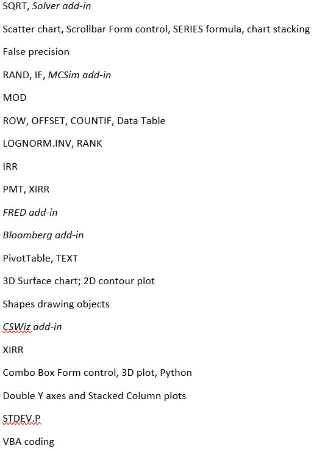

Welcome
This site has free CC-BY-SA materials for an introductory Business Analytics course that heavily emphasizes Microsoft Excel. There are no prerequisites and the target audience is first- or second-year undergraduate students who have used a spreadsheet before, but have no specialized training in Excel, calculus, statistics, or programming.The free textbook for the course is available here:
Gateway to Business Analytics with Microsoft Excel®
Supporting Excel files are available from the menu at top-right.
Content and Excel functions are listed below.
Chapter |
Title |
Description |
1 |
Introduction |
Defining Business Analytics |
2 |
Optimization |
Lifeguard Problem Solver Excel add-in |
3 |
Monte Carlo Simulation |
MCSim Excel add-in Parrondo's Paradox Pooled Testing Search Theory |
4 |
Growth |
CAGR & Rule of 70 Long Run Economic Growth PV & IRR |
5 |
Unemployment |
FRED Excel add-in Seasonal Adjustment Bloomberg terminal |
6 |
Constrained Optimization |
2D & 3D Data Visualization Solver Excel add-in Comparative Statics Wizard Excel add-in Elasticity |
7 |
Yield Curve |
3D Visualization FRED Excel add-in Python Bloomberg terminal |
8 |
National Income Accounting |
Y = C + I + G + NX FRED Excel add-in International comparisons of Investment |
9 |
VBA |
Introducing Macros in Excel Functions |
10 |
Demography |
Visualization: Population Pyramids Demographic Analytics |

All feedback and comments most welcome.
Humberto Barreto
DePauw University
hbarreto@depauw.edu